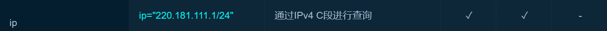
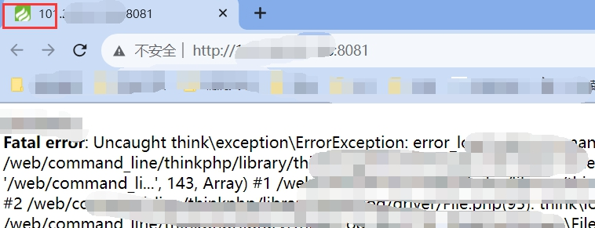
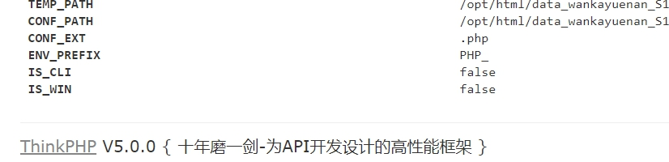
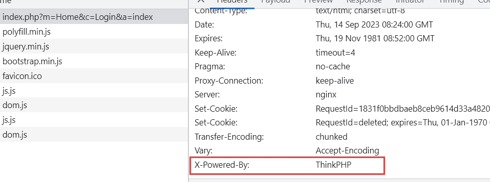
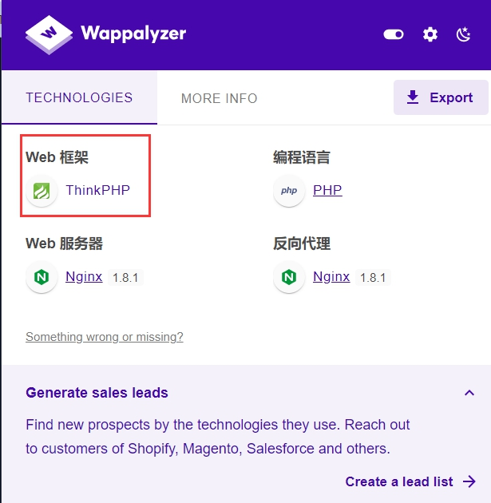
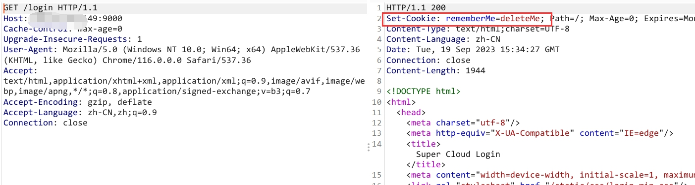
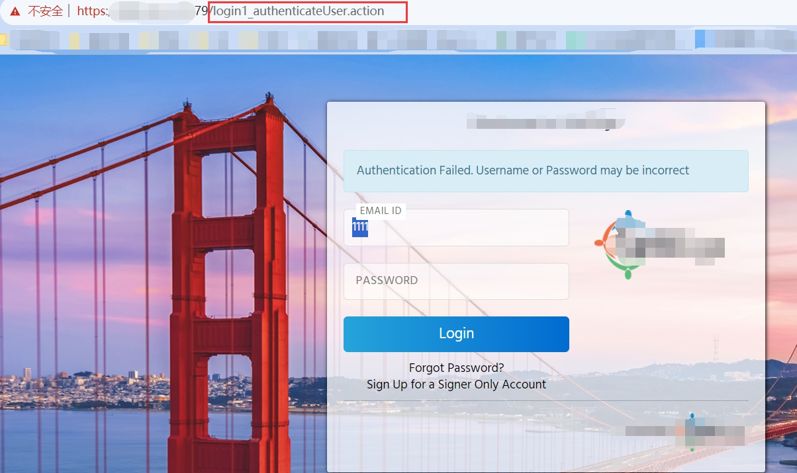
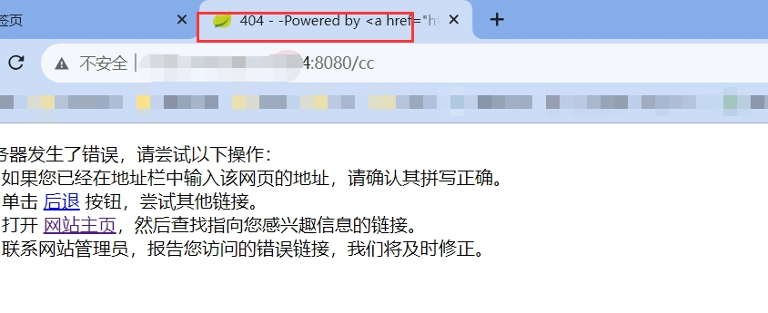
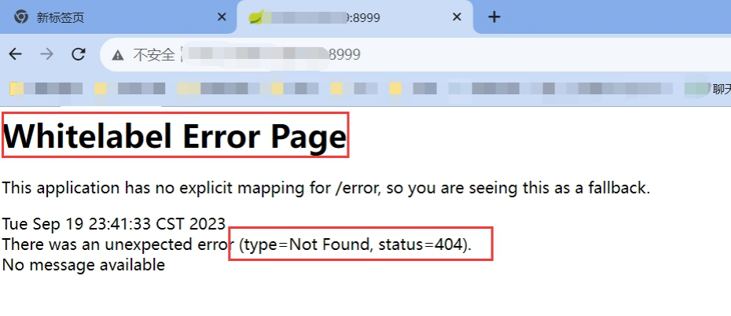

信息收集（Information Gathering）是网络安全、渗透测试、威胁情报分析等领域的关键步骤，也是企业风险管理、竞争情报分析等场景中的重要环节。它的核心目的是全面了解目标，为后续决策或行动提供数据支持。
资产信息收集
主域名资产收集
ICP备案查询
| 名称 | 链接 |
|---|---|
| 工信部备案 | https://beian.miit.gov.cn/#/Integrated/index |
| ICP备案查询-站长之家 | http://icp.chinaz.com/ |
| 公安备案 | https://www.beian.gov.cn/portal/registerSystemInfo |
Whois查询
通过whois查询可以获得域名注册者邮箱地址等信息。一般情况下对于中小型网站，域名注册者就是网站管理员。利用搜索引擎对whois查询到的信息进行搜索，获取更多域名注册者的个人信息。通过whois查询获取IP、法人的名字、电话、邮箱、地址等信息对社工攻击具有很大的作用。
| 名称 | 链接 |
|---|---|
| 站长之家 | https://whois.chinaz.com/ |
| 全球whois | https://www.whois.com/whois/ |
子域名资产收集
子域名爆破工具
| 名称 | 链接 |
|---|---|
| layer子域名挖掘机 | https://github.com/euphrat1ca/LayerDomainFinder |
| OneforAll | https://github.com/shmilylty/OneForAll |
| subfinder | https://github.com/projectdiscovery/subfinder |
SSL/TLS证书查询
| 名称 | 链接 |
|---|---|
| crt.sh | https://crt.sh/ |
子域名的信息泄露包括JS文件泄露、网络爬虫等
| 名称 | 链接 |
|---|---|
| JSFinder是一款用作快速在网站的js文件中提取URL，子域名的工具。 | https://github.com/Threezh1/JSFinder |
| FindSomething | https://github.com/momosecurity/FindSomething |
旁站和C段扫描
旁站指的是同一服务器上的其他网站，很多时候，有些网站可能不是那么容易入侵。那么，可以查看该网站所在的服务器上是否还有其他网站。如果有其他网站的话，可以先拿下其他网站的webshell，然后再提权拿到服务器的权限，最后就自然可以拿下该网站了！
C段指的是同一内网段内的其他服务器，每个IP有ABCD四个段，举个例子，192.168.0.1，A段就是192，B段是168，C段是0，D段是1，而C段嗅探的意思就是拿下它同一C段中的其中一台服务器，也就是说是D段1-255中的一台服务器，然后利用工具嗅探拿下该服务器。
绕过CDN寻找真实IP
CDN (内容分发网络) 指的是一组分布在各个地区的服务器。这些服务器存储着数据的副本，因此服务器可以根据哪些服务器与用户距离最近，来满足数据的请求。CDN 提供快速服务，较少受高流量影响。
通俗来讲，CDN就是用来加速访问的。例如百度引擎，全国几亿人每天都在时不时使用百度进行内容搜索，如果只靠自身的服务器是很难支撑的，这个时候百度就使用了CDN技术，在全国各处设置CDN节点，当用户使用百度引擎时，其实就是在使用离用户最近的百度CDN节点来搜索内容。
1.使用各种多地 ping 的服务，查看对应 IP 地址是否唯一，如果不唯一大概是使用了CDN
| 名称 | 链接 |
|---|---|
| 站长之家 | http://ping.chinaz.com/ |
| 爱站 | http://ping.aizhan.com/ |
| ipip | https://tools.ipip.net/ping.php |
2.使用 nslookup 进行检测，原理同上，如果返回域名解析对应多个 IP 地址多半是使用了 CDN
3.毕竟 CDN 还是不便宜的，所以很多站长可能只会对主站或者流量大的子站点做了 CDN，而很多小站子站点又跟主站在同一台服务器或者同一个C段内，此时就可以通过查询子域名对应的 IP 来辅助查找网站的真实IP。
旁站
c段
1.网络空间搜索引擎（fofa）

网站指纹识别
网站指纹识别
| 名称 | 链接 |
|---|---|
| 潮汐 | http://sso.tidesec.com/ |
| whatweb | http://whatweb.bugscaner.com/look/ |
| github查找 | https://github.com/search?q=cms识别 |
网站waf识别
| 名称 | 链接 |
|---|---|
| wafw00f | https://github.com/EnableSecurity/wafw00f |
敏感信息收集
网站漏洞扫描
网站漏洞扫描，各种扫描器，如：nessus，极光，xray，AWVS，goby，AppScan
目录扫描
目录扫描，主要扫描敏感信息、隐藏的目录和api、代码仓库、备份文件等。工具有：各种御剑，dirmap，Dirsearch，dirbuster，7kbstorm，gobuster等等。
JS信息收集
| 名称 | 链接 |
|---|---|
| jsfinder | https://gitee.com/kn1fes/JSFinder |
框架识别
常用php框架识别
| thinkphp框架识别方法 | Laravel框架识别方法 |
|---|---|
| Wappalyzer插件 | Wappalyzer插件 |
| ico图标 | header头部：Set-Cookie特征 |
| header返回头部 | |
| 报错信息 | |
| 源码 |

常用Java框架识别
| 名称 | 方法 | |
|---|---|---|
| shiro框架 | 请求包中cookie中：rememberMe字段 | 返回包中：rememberMe=deleteMe |
| strust2框架 | 一般url中看到：.do或.action结尾，大概率是struts2框架 | 常见的404，500等报错页面 |
| spring,springboot框架 | 小绿叶默认图标 | 常见的404，500等报错页面 |
shiro框架

strust2框架

springboot框架

参考文章：
https://blog.csdn.net/qq_44029310/article/details/125694514
https://blog.csdn.net/weixin_51730169/article/details/124700122